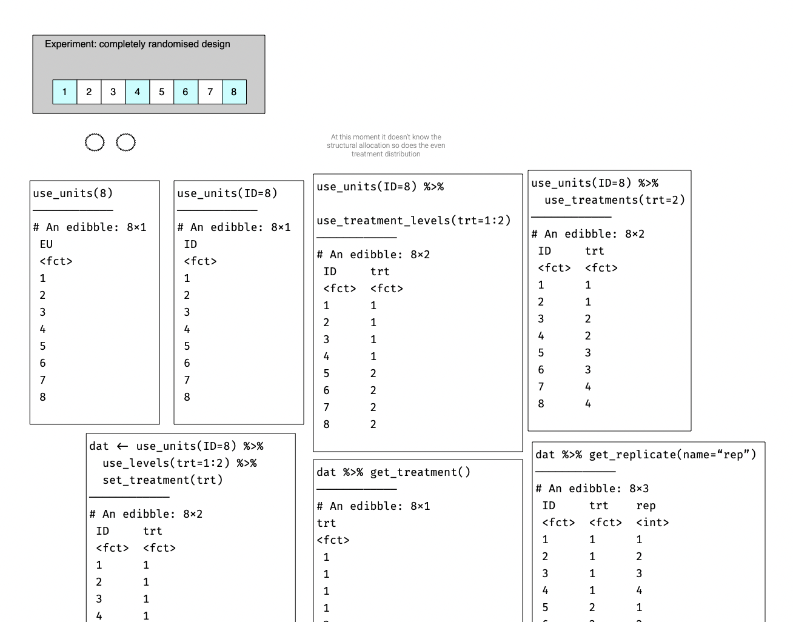
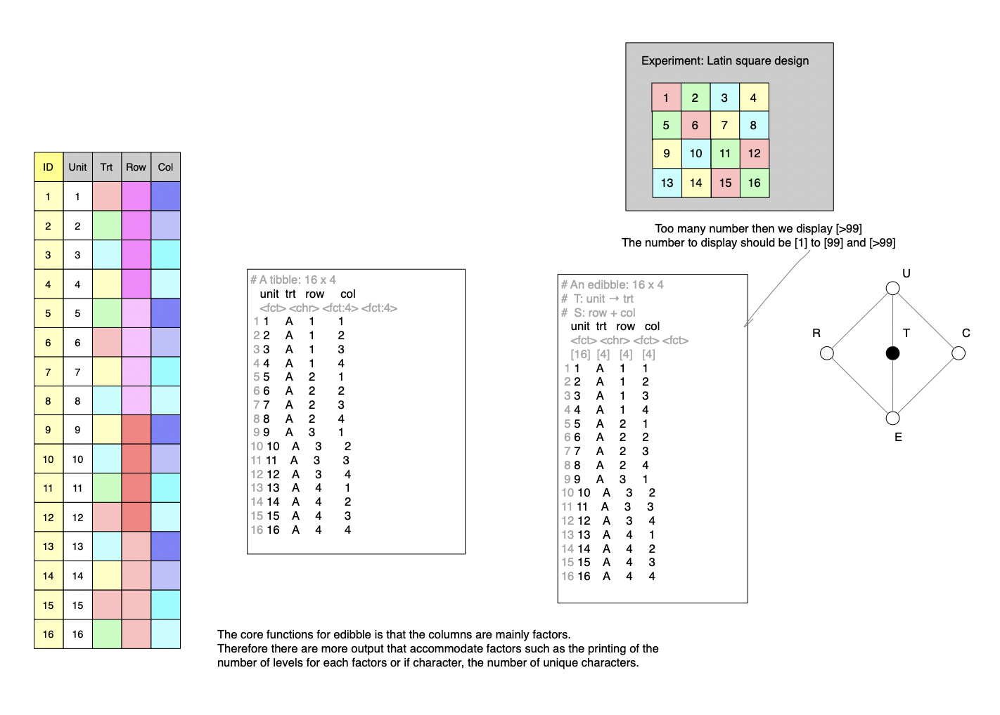
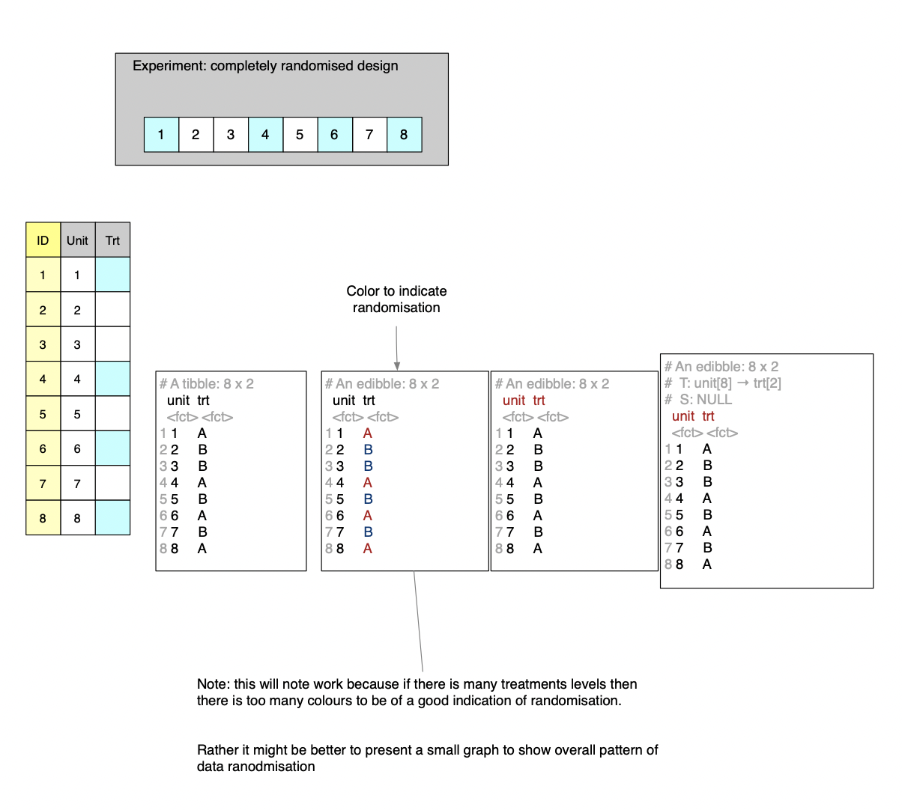
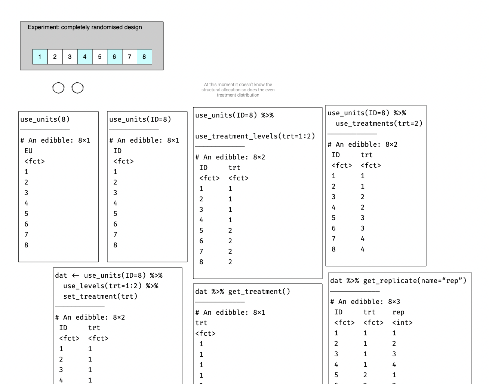
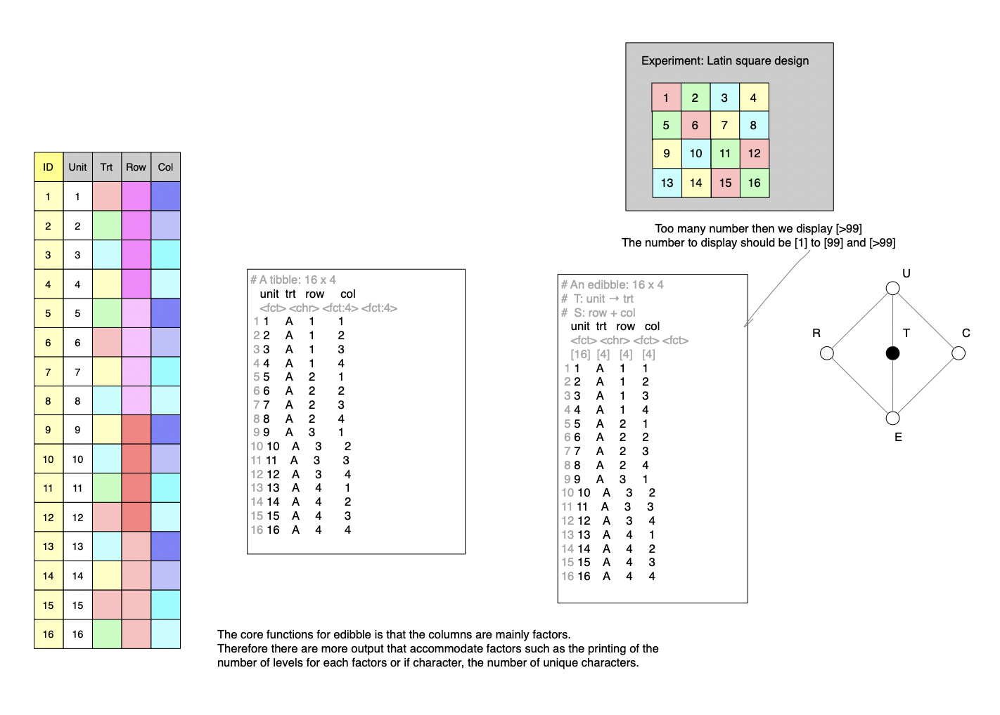
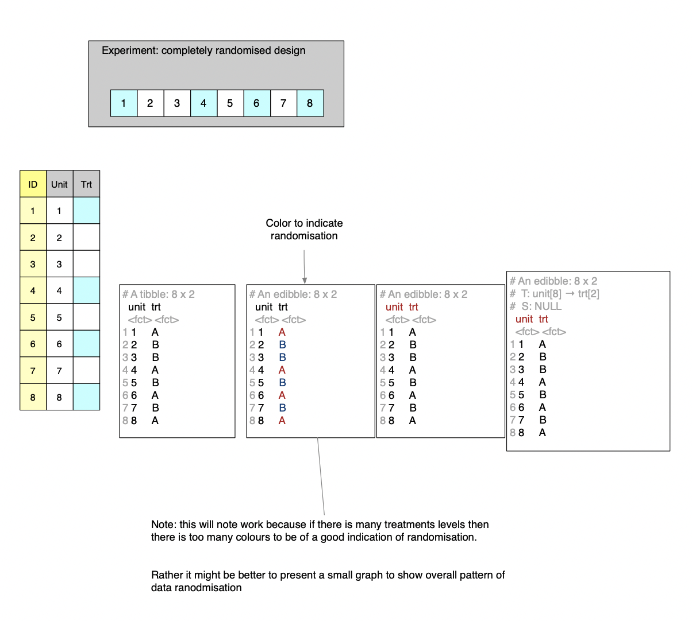

The book will include about the basics of experimental design and how to get started with the edibble R-package and its extensions to plan, design and simulate experiments.
The concept and the development of the edibble R-package and its extensions have been my long-standing passion project. I’ve designed experiments in practice and taught experimental design in undergraduate statistics courses but felt the friction in the system to construct the experimental design. For some years, I’ve thought about doing something in the area of experimental design research and whenever I go to conferences, I would attend any talks about experimental design (which there are not many of!). With the rise of popularity in tidyverse and the development of tsibble, coupled with my own interest and skill in software development, I came up with the idea of edibble in early 2019 – some of these sketches are shown below. I sketched out the proof of concept that year and have been developing it ever since.
If you know the present system, you’ll notice how it’s evolved from the original idea!



If I was any good, I would have finished developing this sooner, but the project is far different to all my past research projects and truthfully, I get distracted easily, take on far too many service jobs, put enormous effort into my teaching and do other research activities to actually have had time for this project. But in the little time I had, working on this has brought me joy. If I care about just climbing up the academic ladder, I wouldn’t work on this project – it’s far too inefficient for that purpose. It’s my belief that this project will make a significant positive difference in the world, particularly for scientific studies, and I hope you find that too.
An experimental design is a huge field, and no doubt I know only a small portion of it. So if you find mistakes or I’m not giving enough due attention or credit to an important concept, please feel to let me know.